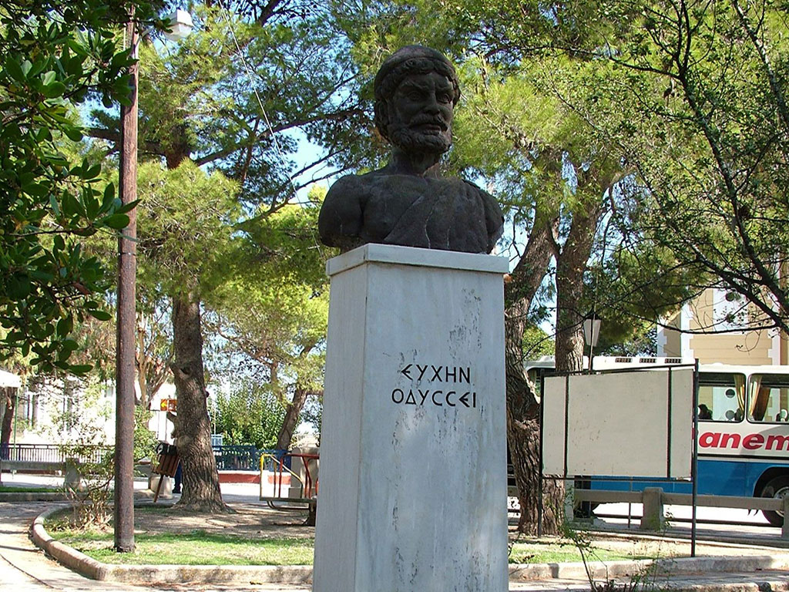

Stavros ist der größte und lebendigste Ort im malerischen Norden der griechischen Insel Ithaka. Das Dorf liegt erhöht an den Hängen des Exogi-Berges und bietet einen wunderschönen Ausblick auf die Bucht von Polis. Auf dem zentralen, von Platanen beschatteten Dorfplatz erinnert eine markante Büste an den legendären König Odysseus, dessen antiker Palast in dieser Region vermutet wird. Einheimische und Reisende treffen sich hier in den traditionellen Cafés, um die lokale Honigspezialität Rovani zu genießen. Mit seinen pastellfarbenen Häusern und der nahen, archäologisch bedeutenden Loizos-Höhle verbindet Stavros perfekt antike Mythologie mit entspanntem griechischen Inselleben.
